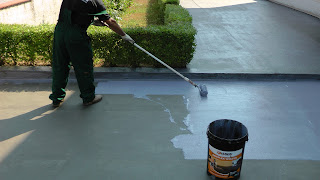
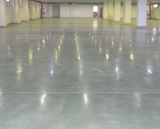
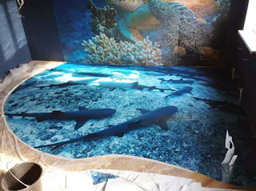

Jasa Pemasangan Waterproofing Membrane Bakar Bau-bau | ☎ 0813 1800 7480 (Apip)
Bagi banyak orang epoxy coating lantai yaitu salah satu teknik pelapisan lantai untuk segala macam lini industri seperti mall, gedung, kantor dan masih banyak lagi. Coating lantai melengkapi struktur lantai bangunan, agar bangunan hal yang demikian lebih mempunyai kekuatan tahan dan juga pemakaian rentang waktu yang lama. Bagi anda yang mempunyai sebuah usaha dan berharap menjadikan gedung atau indutri yang anda miliki lebih memiliki intensitas keamanan dan juga poin keindahan, anda bisa mengunjungi dis.or.id.
Berikut ini ulasan mengenai epoxy coating yang bisa anda jadikan rujukan.
Jasa Waterproofing Bau-bau

Waterproofing coating adalah perlindungan rembesan dengan menggunakan bahan polimer berbentuk bahan cat untuk menutup permukaan struktur yang dilindungi. Kalau benda yang memiliki sifat seperti ini umumnya digunakan pada lingkungan yang cenderung berair atau berada di bawah air. Seperti yang sudah dikenal bahwa waterproofing mempunyai fungsi utama yakni mencegah dan menghinndari rembesan yang menyebabkan kerusakan dinding.
ini telah banyak jasa waterproofing Bau-bau yang beredar tapi tak pasti hasil yang didapatkannya. Kecuali dari itu, anda bisa percaya akan jasa waterproofing Bau-bau yang ditawarkan oleh dis.or.id. Dis.or.id juga menyediakan jasa waterproofing Bau-bau coating yang bisa anda manfaatkan.
Jasa Floor Hardener Bau-bau

Jasa floor hardener ialah komponen dari pekerjaan lantai pada proyek konstruksi. Floor hardener yaitu bahan sebagai pengeras dan pelicin lantai beton yang terbuat dari sebagian campuran bahan, diantaranya: Pasir, Grading, Semen, Silika, Pigmen, dan lainnya. Material floor hardener berbentuk bubuk (powder) yang ditaburkan pada beton berair yang kemudian dikerjakan trowel finish, sehingga akan diciptakan permukan yang lebih keras, tetapi rata dan halus. Floor hardener banyak di aplikasikan pada industri besar yang memiliki traffic yang cukup tinggi. Banyak kelebihan dari floor hardener yang dapat anda peroleh.
Hasil dari pengerjaanya bahkan tak perlu di ragukan lagi. Kini terbukti banyak gedung maupun rumah yang memakai jasa floor hardener rekomendadis dis.or.id.
Jasa Epoxy Lantai
Epoxy flooring atau epoxy lantai adalah suatu cara pelapisan lantai atau cat yang mengandung dua bagian, resin dan hardener / pengeras. Karena resin lazimnya ringan, kadang-kadang hampir tidak berwarna / transparan, dan hampir bebas dari bau. Epoxy lantai bisa digunakan pada berjenis-jenis ragam lantai bidan di berjenis-jenis Lini industri yang berkeinginan lebih memperlihatkan kesan kuat dan juga nilai keindahan pada gedung tersebut. Tak mau menambahkan warna, lantai Anda menjadi betul-betul menarik. Sifat rekatnya yang tinggi diciptakan selama proses konversi dari cair ke padat. Jikalau ini menciptakan epoxy menjadi solusi tepat untuk lapisan lantai anda. Hasil epoxy cat lantai pantas untuk lantai beton industri juga.
Jasa epoxy lantai bisa langsung anda sewa di dis.or.id. Dengan harga yang relatif murah dan pekerja yang professional sehingga menghasilkan lantai yang tahan kepada air dalam jangka waktu yang lama.
Distributor & Supplier Cat Epoxy Bau-bau
Setiap, apa merk cat epoxy lantai yang terbaik?. Ada berjenis-jenis bahan kimia dasar dalam resin epoxy yang juga memiliki beberapa sifat yang berbeda dan tentunya juga mempunyai kelebihan dan kegunaan yang berbeda pula. Sekarang cat epoxy telah tersedia dengan berbagai macam dan dapat di aplikasikan pada bidang seperti kayu, lantai, lantai beton dan lainnya. Tersedia pula varian warna yang dapat anda pilih cocok dengan keperluan.
Kini telah banyak hadir merk cat epoxy yang dapat anda jadikan rujukan Tak anda mau membangun sebuah rumah yang tahan dan juga bagus. Jikalau kunjungi situs hal yang demikian dan Hubungi kontak yang telah tersedia untuk menanyakan di dan harga serta menanyakan kabar pemesanan lebih komplit lagi.
Anda dapat menerima Cat epoxy dengan berbagai merk terbaik serta bermacam-macam ragam varian warna dengan mengunjungi dis.or.id. Harga yang ditawarkan malah sangat relatif murah.
Jasa Epoxy Lantai 3D Bau-bau

Berkeinginan memiliki lantai rumah yang tak awam, anda bisa memanfaatkan jasa epoxy lantai 3D. Karena hanya di sekitaran rumah melainkan jasa epoxy lantai 3D juga bisa diaplikasikan pada gedung perkantoran supaya memiliki nilai keindahan dan keindahan dikala dipandang orang. Epoxy lantai 3D memberikan berbagai jenis tipe gambar yang dapat anda aplikasikan pada lantai baik industri maupun rumah. Jasa epoxy lantai 3D menggunakan cat khusus yang nantinya akan diterapkan pada sebuah bidang benda hal yang demikian seharusnya mempunyai mutu terbaik agar konsisten awet dan tahan lama padahal digunakan pada rentang waktu yang benar-benar lama.
Anda bisa memanfaatkan layanan jasa epoxy lantai 3D yang ditawarkan oleh dis.or.id. Di sana Anda bisa mendapatkan informasi tentang jasa epoxy lantai 3D dengan bermacam-macam tolok ukur harga layak dengan intensitas kesulitan dalam pelukisan.
Informasi Pemesanan Lebih Lanjut:
Google Maps: https://www.google.com/maps/d/u/0/viewer?mid=1QjgQwdzWorE9dvlKyogbXvTRbqa4TxHW&ll=-7.27380280025364%2C112.65243155000007&z=18
Note: https://www.facebook.com/notes/distributor-of-industrial-supply/kontraktor-jasa-waterproofing-teknik-fosroc-membrane-dlsb/1785689781730901/
Event: https://www.facebook.com/events/340312976449304/
Portfolio Produk: https://www.facebook.com/1681607345472479/photos/?tab=album&album_id=1692769967689550